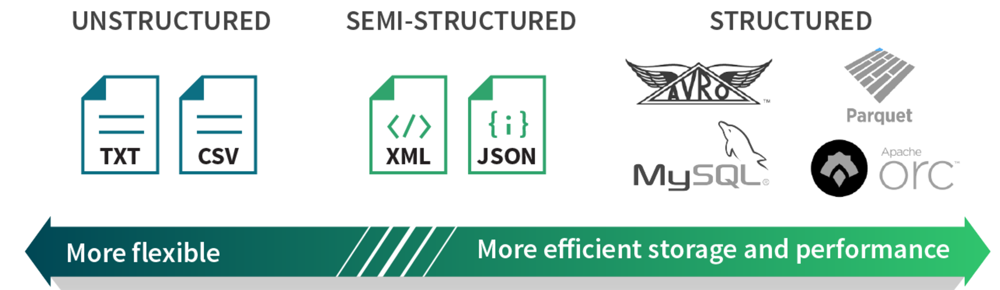

class: center, middle background-image: url(./images/crown-fountain.jpg) background-size: 100% ## Building a community fountain around a data stream ### Maria Patterson #### Astronomer @ University of Washington #### Tech Community Organizer @ PyLadies Seattle and PyData Seattle Meetup groups #### Twitter: @OpenSciPinay --- layout: true <div class="footer">Maria Patterson @OpenSciPinay</div> --- background-image: url(./images/crown-fountain-detail.jpg) background-size: 100% <div class=shrink> <br><br><br><br><br><br><br> <br> <br><br><br><br><br><br><br> <br> <br><br><br><br> Crown Fountain in detail </div> --- .left-column[ ### About me ##### 2016.08 - now <br>Scientist @UW ##### 2013 - 2016 <br>Scientist @UChicago ##### 2007 - 2013 <br>MS+PhD @NMSU ##### 2003 - 2007 <br>BA @UChicago ] .right-column[ #### I've worked in astronomy on * Star formation (deep imaging and spectra of baby star regions) * Gas accretion (modeling galaxy gas haloes) * Old stellar streams (4-meter Mosaic image processing) * [Properties of star formation and the interstellar medium in galaxy outskirts](http://gradworks.umi.com/35/74/3574517.html) ] .right-column[ #### I've worked in cloud computing + "Data Commons" * NASA satellite data re-analysis pipelines (Storm + Hadoop + Accumulo) * NOAA's move to the cloud (NOAA Big Data Project with Open Commons Consortium) * API-based data services (Open Science Data Cloud) * [A case for data commons: toward data science as a service](http://aip.scitation.org/doi/abs/10.1109/MCSE.2016.92) ] .right-column[ #### Etc blah blah things and stuff * Cleveland native (Go Cavs!)/ Chicago transplant (Go Cubs!) * Distance running Twitter: @runaverage * Eating (pizza, old-fashioned donuts (+drinks), beer) * [https://mtpatter.github.io/pepsi-hidden-figures/](https://mtpatter.github.io/pepsi-hidden-figures/) ] --- background-image: url(./images/tech-timeline-no-header.png) background-size: 80% --- background-image: url(./images/messier-4.jpg) background-size: 100% --- background-image: url(./images/dirac-seattle-times.jpg) background-size: 90% --- class:inverse background-image: url(./images/ghostbusters-expect-results.jpg) background-size: 100% <br><br><br><br><br><br><br> <br> <br><br><br><br><br><br><br> <br> <br><br><br><br> Personally, I liked the university. They gave us money and facilities. We didn't have to produce anything! You've never been out of college. You don't know what it's like out there. I worked in the private sector. They expect results. --- <center></center> <center></center> --- <center></center> <center></center> --- background-image: url(./images/new-ghostbusters.jpg) background-size: 60% --- #### **Why is this interesting?** * Astronomical data streams are open to the public, awaiting creative use! * We've made tech choices with no hard requirements on programming language, low barrier to entry. * Ecosystem has wide support and use cases outside of astronomy, enhancing flexibility, usability, sustainability. #### **What are we looking at? ** * Transport: Apache Kafka * Scalable in cluster mode, replicated, allows for stream "rewind", many use cases * Serialization: Apache Avro * Fast parsing with structured messages (typing), strictly enforced schemas, but allows for schema evolution * Filtering: Apache Spark * Direct connection to Kafka, batch-like stream interface (Python or SQL-like) #### **What can you do?** * Deploy Dockerized mock stream testbed with Kafka * https://github.com/mtpatter/alert_stream * Check out sample Avro schema and data for astronomy * https://github.com/mtpatter/sample-avro-alert * See Dockerized Jupyter notebooks for a how-to on filtering with Spark using Kafka and Avro * https://mtpatter.github.io/bilao --- background-image: url(../lsst-template/pptimages/image4.jpeg) background-size: 100% .inverse[ <div class="shrink"> <div class="mermaid"> graph TB; S[pipelines]-->K{distribution}; K -- alerts --> b1(broker 1); K -- alerts --> b2(broker 2); K -- alerts --> b3(broker 3); K -- alerts --> b4(broker 4); K -- all alerts --> b5[alert <br> database]; b1 --> u1((you)); b1 --> u2((me)); b2 --> u3((alice)); b2 --> u4((bob)); b3 --> u5((carol)); b4 --> u6((dan)); b4 --> u7((tweak)); style S fill:#777; style K fill:#551A8B; style b1 fill:#528B8B; style b2 fill:#528B8B; style b3 fill:#528B8B; style b4 fill:#528B8B; style b5 fill:#777; linkStyle default stroke:#000, stroke-width:4px; </div> </div> ] <!-- 1. Don't lose any data 2. Package alerts and send postage stamp cutouts 3. Keep accurate and in-sync alert archive 4. Support scalability with addition of brokers 5. Allow simple filtering using Python or SQL-like interface (mini-broker) --> --- ## Large alert streams opened as public data: | Numbers | Zwicky Transient Facility | Large Synoptic Survey Telescope | | :----| -------------: | -------------: | | alerts per visit | 1,000 | 10,000 | | visit frequency | every 45s | every 39s | | alerts per night | 1 million | 10 million | | size of alert | 20+ kb | 50-150+ kb | | nightly data | 20-40+ GB | 600 GB - 1.5 TB | -- ### ...compared to a database of Virtual Observatory VOEvent alerts: | Numbers | voeventdb.4pisky.org | | :----| -------------: | | total April 2014 - July 6, 2017 | 1,679,719 | | alert frequency | 1 per minute | --- ### 1. Transport system: Apache Kafka * Scalability * Replication * Allows stream "rewind" ### 2. Data formatting: Apache Avro * Fast parsing with structured messages (typing) * Strictly enforced schemas, but schema evolution * Allows postage stamp cutout files ### 3. Filtering/ processing: Apache Spark * Direct connection to transport system * Stream interface similar to batch * Allows for Python or simple SQL-like queries --- background-size: 100% ### Transport prototyping: Apache Kafka .pull-left[ * Distributed log system/ messaging queue * Reinvented as strongly ordered, pub/sub streaming platform ] .pull-right[ <img src="./images/kafka-log-offsets.png" width="300"> ] .pull-left[ * Highly scalable, in production at LinkedIn, Netflix, Microsoft * Great clients + connectors, including Python - good usability ] .pull-right[ <img src="./images/kafka-apis.png" width="250"> ] --- background-size: 100% ### Transport prototyping: Apache Kafka ### 1. Mock a stream of alerts sent to Kafka ```python from lsst.alert.stream import AlertProducer streamProducer = AlertProducer(topic, schema, **kafkaConf) streamProducer.send(dict_data, avroEncode=True/False) streamProducer.flush() ``` [https://github.com/mtpatter/alert_stream](https://github.com/mtpatter/alert_stream) * Includes Docker Compose file for Kafka + Zookeeper * Configures connection to Kafka broker and sets stream topic * Takes dict (with optional stamps) * Can turn Avro encoding on or off * Uses single repeated "alert" in testing * Sends configurable batch size continuously every 39/45 s --- background-size: 100% ### Transport prototyping: Apache Kafka ### 2. Use template consumers to see alerts ```python from lsst.alert.stream import AlertProducer streamReader = AlertConsumer(topic, schema, **kafkaConf) while True: msg = streamReader.poll(avroDecode=True/False) if msg is None: continue else: print(msg) ``` [https://github.com/mtpatter/alert_stream](https://github.com/mtpatter/alert_stream) * Configures connection to Kafka broker and subscribes to topic * Script for printing alert content * Avro decoding on or off * Stamp collection on or off * Script for monitoring the stream (drops content) --- ### Data formatting: Apache Avro  -- <img src="./images/avro-logo.png" width="230"> * Schemas defined with JSON * Dynamic typing- strict adherence * Flexible format- schema evolution * Also used in production, science, recommended by Kafka --- background-size: 100% ### Data formatting: Apache Avro ### 1. Follow example schema + data Schema ```python { "namespace": "example.avro", "type": "record", "name": "User", "fields": [ {"name": "name", "type": "string"}, {"name": "favorite_number", "type": ["int", "null"]}, {"name": "favorite_color", "type": ["string", "null"]} ] } ``` Data ```python {"name": "Ben", "favorite_color": "red", "favorite_number": random.randint(0,10)} ``` --- background-size: 100% ### Data formatting: Apache Avro ### 2. Write alert schemas in Avro format [https://github.com/mtpatter/sample-avro-alert](https://github.com/mtpatter/sample-avro-alert) ```python alert_schema = ''' { "namespace": "ztf", "type": "record", "name": "alert", "doc": "sample avro alert schema v1.0", "fields": [ {"name": "alertId", "type": "long", "doc": "add descriptions like this"}, {"name": "candid", "type": "long"}, {"name": "candidate", "type": "ztf.alert.candidate"}, {"name": "prv_candidates", "type": [{ "type": "array", "items": "ztf.alert.prv_candidate"}, "null"]}, {"name": "cutoutScience", "type": ["ztf.alert.cutout", "null"]}, {"name": "cutoutTemplate", "type": ["ztf.alert.cutout", "null"]}, {"name": "cutoutDifference", "type": ["ztf.alert.cutout", "null"]} ] } ''' ``` --- background-size: 100% ### Data formatting: Apache Avro ### 3. Add alert data #### Includes cutout jpgs (or any file format) as bytes ```python stamp_schema = ''' {"namespace": "ztf.alert", "type": "record", "name": "cutout", "fields": [ {"name": "filename", "type": "string"}, {"name": "stampdata", "type": "bytes"}] } ''' ``` ```python cutout_file = 'stamp-54720.fits' with open(cutout_file, mode='rb') as f: stampdata = f.read() ``` ```python {"filename": "stamp-54720.fits", "stampdata": stampdata} ``` --- background-size: 100% ### Data formatting: Apache Avro ### 4. Schema can be different, if the data fits ```python {'midPointTai': 12314.142412, 'diaSourceId': 111111, 'y': 121.1, 'yVar': 12.1, 'filterName': 'my favorite filter', 'radec': {'dec': 1214141.121, 'ra': 124142.12414}, 'ccdVisitId': 111111, 'x': 112.1, 'snr': 41.1, 'xVar': 1.2, 'base_CircularApertureFlux_3_0_flux': 134134, 'raVar': 5.1, 'ra_dec_Cov': 1.241, 'decVar': 10.1, 'psFlux': 1241.0, 'x_y_Cov': 11.2} ``` ```python { ... "fields": [ {"name": "diaSourceId", "type": "long"}, {"name": "midPointTai", "type": "double"}, {"name": "filterName", "type": "string"}, {"name": "radec", "type": [{"type": "record", "name": "Radec", "fields": [ {"name": "ra", "type": "double"}, {"name": "dec", "type": "double"} ]}]}, {"name": "snr", "type": "float"} ]} ``` ```python {'diaSourceId': 111111, 'snr': 41.099998474121094, 'radec': {'dec': 1214141.121, 'ra': 124142.12414}, 'filterName': 'my favorite filter', 'midPointTai': 12314.142412} ``` --- background-size: 100% ## Possible data flow <div class="mermaid"> sequenceDiagram Kafka ->> filterService: full stream of alerts filterService-->>Kafka: many streams of filtered alerts Note right of filterService: Schema cut columns<br/>Queries cut records Kafka ->> Broker1: broker1 stream of alerts Kafka ->> Broker2: broker2 stream of alerts </div> --- background-size: 100% ### Filtering/Processing #### What "lookback time" sets "batch" vs "stream"? -- #### Interacting with batch and stream the same way is a huge win <img src="./images/streaming-engine-comparison.png" width="750"> --- background-size: 100% ### Filtering/Processing: Apache Spark --- background-size: 100% ### Filtering/Processing: Apache Spark --- background-size: 100% #### Filtering the stream [https://github.com/mtpatter/bilao](https://github.com/mtpatter/bilao) #### Set up connection ```python from pyspark.streaming.kafka import KafkaUtils kafkaStream = KafkaUtils.createDirectStream( ['my-stream'], {'bootstrap.servers': 'kafka-server:9092', 'auto.offset.reset': 'smallest', 'group.id': 'spark-group' }) alerts = kafkaStream.map(lambda x: x[1]) ``` #### Example map function definition ```python def map_alertId(alert): return alert['alertId'] ``` #### Apply the map function ```python alertIds = alerts.map(map_alertId) # apply map alertIds.pprint() # print to the screen sparkStreamingContext.start() ``` --- background-size: 100% #### Filtering the stream [https://github.com/mtpatter/bilao](https://github.com/mtpatter/bilao) #### Set up connection ```python from pyspark.streaming.kafka import KafkaUtils kafkaStream = KafkaUtils.createDirectStream( ['my-stream'], {'bootstrap.servers': 'kafka-server:9092', 'auto.offset.reset': 'smallest', 'group.id': 'spark-group' }) alerts = kafkaStream.map(lambda x: x[1]) ``` #### Example filter function definition ```python def filter_Ra(alert): return alert['diaSource']['ra'] > 350 ``` #### Apply the filter function ```python alertsRA = alerts.filter(filter_Ra) # apply filter alertsRA.pprint() # print to the screen sparkStreamingContext.start() ``` --- background-size: 100% #### **Why is this interesting?** * Astronomical data streams are open to the public, awaiting creative use! * We've made tech choices with no hard requirements on programming language, low barrier to entry. * Ecosystem has wide support and use cases outside of astronomy, enhancing flexibility, usability, sustainability. #### **What are we looking at? ** * Transport: Apache Kafka * Scalable in cluster mode, replicated, allows for stream "rewind", many use cases * Serialization: Apache Avro * Fast parsing with structured messages (typing), strictly enforced schemas, but allows for schema evolution * Filtering: Apache Spark * Direct connection to Kafka, batch-like stream interface (Python or SQL-like) #### **What can you do?** * Deploy Dockerized mock stream testbed with Kafka * https://github.com/mtpatter/alert_stream * Check out sample Avro schema and data for astronomy * https://github.com/mtpatter/sample-avro-alert * See Dockerized Jupyter notebooks for a how-to on filtering with Spark using Kafka and Avro * https://mtpatter.github.io/bilao